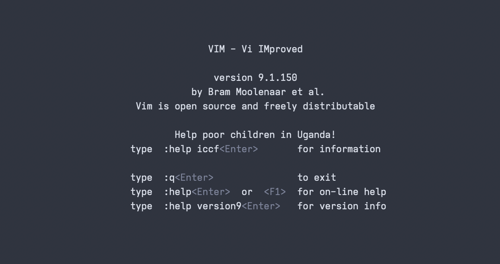

Vim Syntax Highlighting
for Uncommon Languages
Surya Sanjay
Vim If you are a coder and have either never heard of Vim or never used Vim, I strongly urge you to check it out. It is truly a game changer. is an amazing text editor that I use quite often, mainly for taking notes, coding, and research work. The largest drawback of Vim is the fact that it comes to you without any extra features, just as a blank screen:
startify, you might not be able to
see this anymore when you type vim into the terminal
without a file path argument. You can view it using the
:intro command.

This is the moment where those that are new to Vim proceed to faint;
and, after regaining their senses, they are unable to exit the
editor.
You can press :wq ☺.
But beyond such a point, the canonical user starts mastering keybindings
and coding at light speed until realizing the blasphemous: a few plugins
could help!
I reached this realization sometime around mid-2023, and I’ve been using a tool called Vundle to manage my plugins. However, this falls short, as expansive as the internet is, there is not a plugin for everything. Some plugins allow syntax highlighting for lesser-known languages to improve readability, but somehow I manage to use – I guess – the least used languages.
To that end, I’ve started to create my own syntax files for languages that I use often. They are mostly relevant to my research work and, thus, will likely be irrelevant to most. However, if you’d like to create syntax highlighting for a language that you use, you may use the files listed here as a reference. A more detailed explanation of how to create syntax highlighting can be found at the Vim manual.
Files
-
CHeart:
~/.vim/ftdetect/cheart.vim
~/.vim/syntax/cheart.vim -
CPPTRAJ:
~/.vim/ftdetect/cpptraj.vim
~/.vim/syntax/cpptraj.vim
Navigation
Built using tufte-css and the
Nord palette.